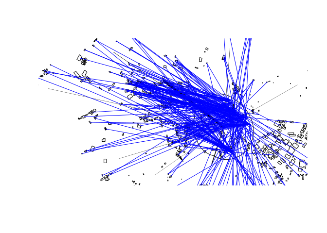

The goal of abstr is to provide an R interface to the A/B Street transport planning/simulation game. In the first instance, it provides a way to generate scenarios of change and saving them as .json files that can be directly imported into the A/B Street game. See https://a-b-street.github.io/docs/dev/formats/scenarios.html#example for details of the schema that the package outputs.
Installation
You can install the released version of abstr from GitHub as follows:
remotes::install_github("cyipt/abstr")Example
library(abstr)
dslines = leeds_desire_lines
ablines = ab_scenario(
leeds_houses,
leeds_buildings,
dslines,
leeds_zones,
output_format = "sf"
)
plot(dslines$geometry, lwd = dslines[[3]] / 30)
plot(leeds_site_area$geometry, add = TRUE)
plot(leeds_buildings$geometry, add = TRUE)
plot(ablines$geometry, col = "blue", add = TRUE)
Each blue line in the plot above represents a single trip, with an associated depature time, that can be represented in A/B Street.
You can output the result as a list object that can be saved as a JSON file as follows, taking only one of the desire lines (desire line 7, which has only 9 trips for ease of viewing the results) as an example:
library(abstr)
ab_scenario_list = ab_scenario(
leeds_houses,
leeds_buildings,
leeds_desire_lines[7, ],
leeds_zones,
output_format = "json_list"
)
ab_scenario_list
#> $scenario_name
#> [1] "baseline"
#>
#> $people
#> # A tibble: 9 x 2
#> origin$Position$longitude $$latitude trips
#> <dbl> <dbl> <list>
#> 1 -1.52 53.8 <tibble [1 × 3]>
#> 2 -1.52 53.8 <tibble [1 × 3]>
#> 3 -1.52 53.8 <tibble [1 × 3]>
#> 4 -1.52 53.8 <tibble [1 × 3]>
#> 5 -1.52 53.8 <tibble [1 × 3]>
#> 6 -1.52 53.8 <tibble [1 × 3]>
#> 7 -1.52 53.8 <tibble [1 × 3]>
#> 8 -1.52 53.8 <tibble [1 × 3]>
#> 9 -1.52 53.8 <tibble [1 × 3]>
ab_save(ab_scenario_list, "ab_scenario.json")Let’s see what is in the file:
file.edit("ab_scenario.json")It should look something like this, matching A/B Street’s schema.